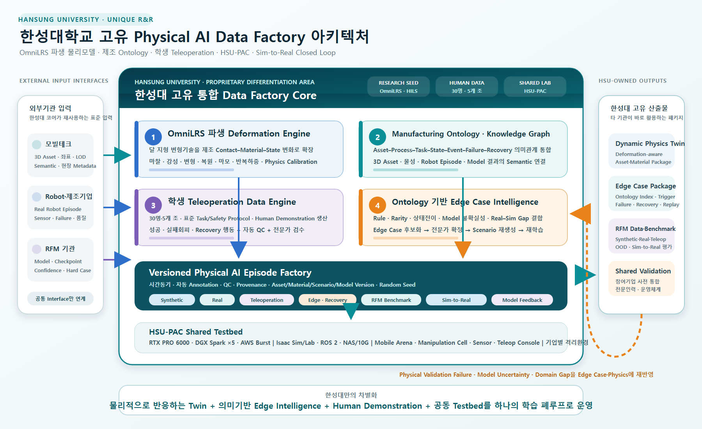

제조환경 Digital Twin·Deformation Engine 기반 Robot RFM 데이터팩토리¶
컨소시엄 제안 · Manufacturing Physical AI Data Factory & Robot Foundation Model
프로젝트 한눈에 보기
본 프로젝트는 실제 제조공간을 Simulation-ready Digital Twin으로 전환하고, 로봇의 접촉으로 발생하는 물리 상태 변화를 재현하는 Manufacturing Deformation Engine을 개발하여, 제조 로봇 파운데이션모델(RFM)의 학습·평가·Sim-to-Real 검증에 필요한 데이터를 지속적으로 생산하는 것을 목표로 합니다.
모빌테크는 현장 취득과 정밀 3D Asset·공간 Digital Twin을 담당하고, 한성대학교는 OmniLRS 활용 연구에서 축적한 변형지형·접촉물리 경험을 제조환경으로 확장해 물성 모델, 로봇 시뮬레이션, 합성데이터 생성, Ontology 기반 Edge Case 추출, 학생 Teleoperation Demonstration Data 구축, RFM 연계 및 실물 검증을 수행합니다. HSU-PAC 실습실은 참여기업의 Asset·Model·Robot을 사전 통합·검증하는 공동 Testbed로 운영합니다.
핵심 제안 — 정적인 제조공간의 시각화에 머물지 않고, 형상·물성·상태·행동·검증 데이터가 함께 순환하는 제조 Physical AI Digital Twin을 구축합니다.
사업·역할 상태
이 페이지는 컨소시엄 제안 단계의 한성대학교–모빌테크 공동 R&R과 기술구조를 정리한 것입니다. 제조 Use Case, 대상 설비·로봇, 정량 KPI와 기관별 최종 책임범위는 컨소시엄 협의와 실증환경 확정 후 기준선(Baseline)으로 관리합니다.

한성대학교 고유 Physical AI Data Factory 아키텍처¶

한성대의 차별성은 개별 기술을 보유하는 데 그치지 않고, OmniLRS 파생 Deformation Engine, Manufacturing Ontology, 30명·5개 조 Teleoperation Data Engine, Ontology 기반 Edge Case Intelligence를 Versioned Episode Factory와 HSU-PAC 안에서 하나의 학습 폐루프로 운영하는 데 있습니다. 결과물은 Dynamic Physics Twin, 재생 가능한 Edge Case·Recovery Package, RFM Dataset· Benchmark와 참여기업 공동검증 체계로 제공됩니다.
왜 제조환경에는 물리적으로 반응하는 Digital Twin이 필요한가¶
제조 로봇의 성능은 3D 형상만으로 결정되지 않습니다. 같은 공간과 작업이라도 바닥 마찰, 부품 공차, 포장재 강성, 그리퍼 접촉, 설비 진동, 센서 노이즈, 작업 순서와 누적 사용 상태에 따라 로봇의 관측과 행동 결과가 달라집니다. 따라서 RFM 학습용 제조 Digital Twin은 다음 세 계층을 동시에 표현해야 합니다.
| 계층 | 표현 대상 | RFM 학습에서의 의미 |
|---|---|---|
| Geometry Twin | 공간, 설비, 치구, 부품, 로봇의 형상·좌표·Semantic | 인식, 위치추정, 경로계획의 기준 |
| Physics Twin | 질량·관성, 마찰, 강성, 감쇠, 접촉, 변형·복원 특성 | 접촉행동과 실패조건의 재현 |
| Behavior Twin | 공정 순서, 로봇 행동, 정상·실패·복구 시나리오 | Task–Observation–Action 학습 데이터 생성 |
flowchart TB
REAL["실제 제조환경<br/>공간·설비·로봇·작업"] -->|Scan · Mapping · 도면| DT["Simulation-ready<br/>Digital Twin"]
DT --> PHYS["Material & Physics Layer<br/>물성·접촉·변형"]
PHYS --> SIM["Isaac Sim / ROS 2<br/>Robot·Sensor·Task"]
SIM --> DATA["Robot Learning Data<br/>관측·상태·행동·이벤트"]
DATA --> RFM["Robot Foundation Model<br/>학습·평가"]
RFM --> ROBOT["Physical Robot<br/>제조작업 검증"]
ROBOT -.->|Failure · Edge Case · Domain Gap| DT
ROBOT -.->|Validation Feedback| PHYS핵심 기술: OmniLRS에서 Manufacturing Deformation Engine으로¶
OmniLRS는 NVIDIA Isaac Sim 기반의 오픈소스 달 탐사 로봇 시뮬레이터로, 절차적·무작위 지형 생성, ROS 2 연계, 합성데이터 생성과 함께 로버 주행에 따른 지형 변형을 지원합니다. 한성대학교는 OmniLRS 기반 달 로버 시뮬레이션과 HILS 연구에서 확보한 경험을 토대로, 변형지형 엔진의 개념을 제조 로봇의 접촉–물성–상태 변화 문제로 파생·고도화합니다.
OmniLRS 기반 기술의 제조환경 전환¶
| OmniLRS 변형지형 개념 | 제조환경 Deformation Engine으로의 확장 |
|---|---|
| Wheel Footprint | 바퀴·그리퍼·공구·부품의 Contact Patch |
| 접촉력–변형깊이 회귀 | 힘·토크·접촉시간·속도에 따른 변위·변형 응답 |
| 반복 통과 시 변형 누적·감쇠 | 반복 하중, 마찰, 마모, 히스테리시스, 영구변형 상태 |
| Depth·Boundary Distribution | 접촉부 변형 형상과 영향영역 분포 |
| 지형·조명·Asset Randomization | 재질·공차·마찰·강성·배치·센서·작업조건 Randomization |
| ROS 2와 합성데이터 | 로봇 상태·행동·접촉·성공/실패가 시간 동기화된 학습 Episode |
OmniLRS의 기존 Deformation Engine은 접촉력으로부터 변형 깊이를 계산하는 비교적 단순한 모델을 사용합니다. 제조환경 확장에서는 소재·형상·온도·속도·시간 의존성과 접촉 이력을 포함할 수 있도록 모델을 모듈화하고, 실제 계측 데이터로 파라미터를 보정합니다.
Manufacturing Deformation Engine의 구성¶
flowchart TB
INPUT["입력<br/>Contact Force·Torque·Velocity·Pose"] --> PATCH["Contact Patch Estimator"]
MAT["Material Profile<br/>마찰·강성·감쇠·복원·공차"] --> RESPONSE["Material Response Model"]
PATCH --> RESPONSE
HISTORY["State History<br/>반복하중·마모·잔류변형"] --> RESPONSE
RESPONSE --> UPDATE["Geometry / Collider / Material State Update"]
UPDATE --> SENSOR["Camera·Depth·LiDAR·F/T·Tactile Observation"]
UPDATE --> LABEL["Deformation·Contact·Failure Ground Truth"]
SENSOR --> EPISODE["RFM Training Episode"]
LABEL --> EPISODE개발 대상은 특정 단일 물리모델에 고정하지 않고 다음과 같이 계층화합니다.
- Material Profile — 마찰, 반발, 밀도, 강성, 감쇠, 복원, 파손·변형 임계값과 불확실성 범위
- Contact Model — 로봇 바퀴·그리퍼·공구와 대상물 사이의 접촉면·힘·토크·미끄럼 추정
- Response Model — 탄성·점탄성·소성·마모 등 Use Case별 변형 응답 모듈
- State Update — 변형된 형상, Collision, 표면 상태와 누적 이력의 실시간 또는 준실시간 갱신
- Data Labeler — 접촉, 변형량, 물성 파라미터, 정상·실패·복구 이벤트의 자동 Ground Truth 생성
- Calibration Interface — 실제 센서·시험 결과를 이용한 파라미터 식별과 Sim-to-Real 오차 보정
한성대학교–모빌테크 공동개발 구조¶
기관별 주도 역할¶
| 구분 | 모빌테크 — Real → Digital | 한성대학교 — Digital → Physical AI |
|---|---|---|
| 요구사항 | 현장 취득범위·정밀도·갱신주기 정의 | Robot·Sensor·Task·물리모델 요구조건 정의 |
| 공간 취득 | LiDAR·MMS·Camera·도면 기반 Scan·Mapping | 로봇 작업영역·센서 가시성·접촉영역 검토 |
| 3D Asset | 설비·공간·부품의 정밀 3D 모델과 LOD 구성 | USD 계층, Articulation, Collision, Joint 요구조건 정의 |
| 물성정보 | 현장 재질·설비·자산 Metadata 조사와 Asset 연결 | 물성 Schema, 파라미터 식별, Deformation Model 개발 |
| 시뮬레이션 | Simulation-ready Asset·좌표·Semantic 제공 | Isaac Sim·ROS 2 환경과 Robot·Sensor·Task 구성 |
| 데이터 | Asset·공간 Metadata와 버전·출처 관리 | Domain Randomization, Synthetic Data와 자동 Annotation |
| 검증 | Real–Digital 공간·Asset 정합 지원 | RFM·Robot HW 실증, Domain Gap 분석과 Feedback |
공동 Hand-off Interface¶
모빌테크의 3D Asset이 시뮬레이터에서 보이는 것만으로는 충분하지 않습니다. 다음 정보를 하나의 버전으로 묶어 전달하는 Simulation-ready Asset Package를 공동 정의합니다.
| Interface | 필수 정보 | 검증 관점 |
|---|---|---|
| Geometry | Mesh, LOD, 단위, 원점, 좌표계, Scale | 공간 치수·배치·정합 오차 |
| Semantic | Asset ID, 설비·부품 분류, 공정·작업 태그 | 데이터 검색과 Task 연결성 |
| Visual | PBR Material, Texture, 조명 반응, 표면 상태 | Camera 기반 인식의 사실성 |
| Collision | 단순화 Collider, Contact 영역, Self-collision | 충돌 안정성과 계산성능 |
| Dynamics | 질량, 무게중심, 관성, Joint, 구동·제약조건 | 로봇 행동과 설비 운동 재현성 |
| Material | 마찰, 반발, 강성, 감쇠, 복원·변형·마모 파라미터 | 실제 시험 응답과 Physics 오차 |
| Sensor | Camera·LiDAR·F/T·Tactile 기준좌표와 Noise | 관측 데이터의 실·가상 정합 |
| Provenance | 취득일, 출처, 보정조건, 버전, 유효범위 | 재현성·변경관리·데이터 거버넌스 |
sequenceDiagram
participant M as 모빌테크
participant I as 공동 Asset·Physics Interface
participant H as 한성대학교
participant R as RFM·Robot HW 기관
M->>I: 3D Asset·좌표·Semantic·현장 Metadata
H->>I: 물성 Schema·Collision·Sensor·Task 요구조건
I->>H: Simulation-ready Asset Package
H->>R: Scenario·Robot Data·Model Interface
R->>H: 모델·제어기·실물 검증 결과
H->>I: Domain Gap·Failure·파라미터 보정값
I->>M: 정합·Asset 갱신 요구한성대학교 세부 R&R¶
한성대학교는 전체 컨소시엄에서 제조환경 Digital Twin을 데이터와 RFM, 실제 Robot HW로 연결하는 Ontology–Simulation–Data–Sim-to-Real 기술 인터페이스를 담당합니다.
| Work Package | 한성대학교 주도 업무 | 주요 산출물 |
|---|---|---|
| HSU-1. Use Case·Interface 설계 | 제조 Task·Process·Failure Case와 Robot·Sensor 요구조건 정의 | Use Case 명세, 공통 Interface·Dataset Schema |
| HSU-2. Deformation Engine | 물성 Profile, 접촉·변형·누적상태 모델과 파라미터 보정 | Engine Module, Material Library, Calibration Tool |
| HSU-3. 제조 로봇 시뮬레이션 | Isaac Sim·ROS 2 기반 Robot·Sensor·Task·Scenario 구성 | Simulation Package, Scenario Library |
| HSU-4. Ontology·Edge Case | 제조 자산·공정·상태·이벤트·실패·복구 Ontology와 Edge Case 후보 추출 | Manufacturing Ontology, Knowledge Graph, Edge Case Extractor |
| HSU-5. 학습데이터 생성 | Domain Randomization, Synthetic/Real/Teleoperation Data 정렬, 자동 Annotation | RFM용 Dataset·Metadata·품질 리포트 |
| HSU-6. RFM 연계 | RFM 기관과 Observation·Action·Task·Model Interface 및 평가기준 협의 | RFM Adapter, Benchmark·Evaluation Protocol |
| HSU-7. 공동 Testbed·Physical Validation | HSU-PAC 참여기업 공동활용, 실제 Robot HW 적용, Domain Gap 분석 | 사전 통합환경, Sim-to-Real 검증결과, Feedback Data |
한성대학교가 기여하는 핵심 가치¶
| 기여영역 | 한성대학교의 차별적 기여 | 컨소시엄 효과 |
|---|---|---|
| Dynamic Physics Twin | OmniLRS 변형지형 연구경험을 제조용 접촉·물성·변형 모델로 파생 | 정적인 3D 시각화를 로봇 행동이 가능한 Physics Twin으로 전환 |
| Asset–Physics 표준 | 3D Asset에 Collision, Joint, 질량·관성, 물성·Sensor Metadata를 결합 | 모빌테크 산출물을 Isaac Sim·RFM·Robot HW가 재사용 |
| Ontology·Edge Case | 자산–공정–상태–이벤트–실패–복구 관계를 구조화하고 규칙·희소성·모델 불확실성으로 후보 추출 | 흩어진 실패 로그를 재현 가능한 학습 Scenario로 전환 |
| 제조 데이터 생성 | 정상·경계·실패·복구 Scenario, Domain Randomization, Teleoperation, 자동 Annotation | Synthetic·Real·Human Demonstration이 결합된 RFM 학습데이터 확보 |
| Teleoperation·인력양성 | 30명·5개 조 학생이 표준 Protocol에 따라 Demonstration·Recovery Data를 수집·검수 | 모델 학습데이터 생산과 Physical AI 실무인력 양성을 동시에 수행 |
| RFM 평가 Interface | Observation·Action·Task·Embodiment Schema와 Benchmark 설계 | 기관별 모델을 동일 제조조건에서 비교·평가 |
| Sim-to-Real 검증 | 실물 Robot의 Domain Gap·Failure·Edge Case를 물성·Scenario에 재반영 | 데이터 생성–재학습–재검증의 지속 개선 Loop 구축 |
| HSU-PAC 공동활용 | GPU·Isaac Sim·ROS 2·NAS·실물 로봇과 기업별 격리환경 제공 | 참여기업이 Asset·Model·Robot을 반입해 본 실증 전 사전 통합·검증 |
제조 Task·Scenario Library¶
초기 대상은 컨소시엄 제조 Use Case와 로봇 구성이 확정된 뒤 기준선으로 동결합니다.
- 이송·물류 — AMR 이동, 적재·하역, 도킹, 통로 폐색과 미끄럼 조건
- 조작 — Pick & Place, Bin Picking, 파지 실패, 대상물 변형·미끄럼·낙하
- 조립 — 삽입, 체결, 정렬, 공차와 접촉력 변화, 치구 위치 편차
- 검사 — Camera·Depth·LiDAR·F/T 기반 외관·치수·접촉 품질검사
- 예외·복구 — 설비 정지, 센서 열화, 부품 누락, 충돌 위험, 작업 재계획
각 Task는 정상–경계–실패–복구 상태를 포함하고, 환경·설비·부품·로봇·센서 조건을 독립적으로 변화시킬 수 있도록 구성합니다.
RFM 학습데이터 설계¶
Episode 단위 데이터¶
| 데이터 계층 | 주요 항목 |
|---|---|
| Task | 자연어·Task ID, 공정 단계, 성공조건, 안전 제약 |
| Observation | RGB/RGB-D, LiDAR, Robot State, F/T, Tactile, 설비·환경 상태 |
| Action | Joint·Cartesian 명령, Gripper, Mobile Base, 고수준 Skill |
| Physics | 접촉점·힘·토크, 마찰·강성, 변형량·복원·마모 상태 |
| Ground Truth | 6D Pose, Segmentation, Depth, Velocity, Collision, Event Label |
| Outcome | 성공·실패·복구, Cycle Time, 품질·안전 지표 |
| Provenance | Asset·Material·Scenario 버전, Random Seed, 생성·실측 조건 |
데이터 생성 전략¶
flowchart TB
BASE["기준 제조 Scenario"] --> DR["Domain Randomization"]
DR --> SYN["Synthetic Episode"]
REAL["실제 Robot Episode"] --> ALIGN["시간·좌표·Semantic 정렬"]
SYN --> MIX["Synthetic + Real Dataset"]
ALIGN --> MIX
MIX --> TRAIN["RFM Pre-training / Fine-tuning"]
TRAIN --> EVAL["Simulation·Physical Evaluation"]
EVAL -->|실패·미커버 조건| DRRandomization 대상에는 조명·시점·배치·공차·마찰·강성·감쇠·변형 임계값·센서 노이즈·작업 속도·로봇 초기상태가 포함됩니다. 모든 변화조건을 Metadata로 보존하여 모델 성능의 원인을 추적하고 같은 Episode를 재생성할 수 있도록 합니다.
RFM 기관과의 연계 범위¶
한성대학교가 RFM 전체 모델을 단독 개발하는 구조가 아니라, RFM 주관기관과 다음 Interface를 공동 정의하고 제조환경 학습·평가를 지원합니다.
- 로봇별 Observation·Action Space와 Embodiment Metadata
- 자연어 Task·공정 단계와 저수준 Robot Action의 연결
- Synthetic·Real Dataset의 혼합비, Curriculum과 Fine-tuning 조건
- Offline Benchmark와 Simulation Rollout 평가
- 실물 Robot 성공률·안전·복구성능 및 Sim-to-Real Gap 분석
- Failure·Edge Case의 재시뮬레이션과 재학습 데이터 생성
Ontology 기반 Edge Case Data Factory¶
제조현장의 Edge Case는 단순히 발생 빈도가 낮은 영상이 아니라, 특정 자산·공정·상태·행동·물성· 안전제약의 조합에서 정상 경로를 벗어난 사건입니다. 한성대학교는 Digital Twin과 실제 Robot에서 수집된 로그를 공통 Ontology에 연결하고, 규칙·희소성·상태전이·Domain Gap·모델 불확실성을 함께 분석하여 Edge Case를 자동 후보화한 뒤 전문가가 확정하는 구조를 제안합니다.
Manufacturing Ontology의 기준 구조¶
| 계층 | 핵심 Entity·Relation | 활용 목적 |
|---|---|---|
| Factory·Line·Cell | 공간, 설비, 안전구역, 좌표계, 포함·인접 관계 | 사건이 발생한 제조 Context 고정 |
| Process·Task·Step | 공정, 작업, 선·후행조건, 성공·중단조건 | 정상 작업경로와 이탈지점 판별 |
| Asset·Material | 설비·치구·부품 ID, 형상·물성·버전 | Digital Twin Asset과 실제 자산 연결 |
| Robot·Sensor·Skill | Embodiment, 관측·행동공간, 제어기, Calibration | 모델·로봇·센서 조건별 성능 비교 |
| State·Event | Pose, 접촉, 변형, 품질, 안전상태와 시간전이 | Episode 내 원인–결과 추적 |
| Failure·Recovery | 실패유형, Trigger, 심각도, 복구행동, 결과 | 실패 재현·복구정책 학습 |
flowchart TB
RAW["Real · Simulation · Teleoperation Log"] --> MAP["Ontology Mapping<br/>Asset·Task·State·Event"]
MAP --> GRAPH["Temporal Knowledge Graph<br/>원인·전이·영향 관계"]
GRAPH --> SCORE["Edge Candidate Scoring<br/>규칙·희소성·불확실성·Domain Gap"]
SCORE --> REVIEW["전문가 검토<br/>확정·병합·심각도 부여"]
REVIEW --> PACK["Edge Case Package<br/>Episode·조건·Trigger·Recovery·Provenance"]
PACK --> REPLAY["Scenario Replay · Data Regeneration"]
REPLAY --> RFM["RFM 학습·평가"]
RFM -->|실패·불확실성 Feedback| RAWEdge Case 추출 기준¶
| 추출 관점 | 후보화 기준 예시 | 생성되는 학습·검증 항목 |
|---|---|---|
| 규칙·제약 위반 | 안전영역 침범, 허용 접촉력 초과, 공정 순서 이탈 | Constraint Violation·Near-miss Scenario |
| 희소 조합 | 재질×공차×조명×Sensor×Pose의 저빈도 조합 | OOD·Long-tail Evaluation Set |
| 비정상 상태전이 | 정상→미끄럼→파지실패, 정지→복구실패 | Failure Transition·Recovery Episode |
| Real–Sim 불일치 | 접촉력·Cycle Time·센서분포·실패조건의 편차 | Domain Gap Calibration Set |
| 모델 불확실성 | RFM Confidence 저하, 모델 간 행동 불일치, 반복 진동 | Hard Example·Active Learning Queue |
| 데이터 이상 | 시간동기 오류, Ontology 관계 누락, Label 충돌 | Data Quality Issue·재취득 요청 |
Edge Case Package에는 EdgeCase ID, 제조 Context, Trigger 전·후 시계열, 관련 Asset·Robot·Sensor,
물성·Scenario·Model 버전, 심각도, 실패·복구 Label과 데이터 출처를 함께 저장합니다. 이 구조를 통해
검색된 사건을 동일 Digital Twin에서 재생하고 조건을 변화시켜 추가 학습데이터로 확장할 수 있습니다.
자동화의 책임범위
Ontology와 규칙은 Edge Case의 탐색·정렬·재현을 자동화하지만, 안전·품질과 관련된 최종 판정은 제조 전문가와 RFM·Robot HW 기관의 검토를 거칩니다. 자동 후보화와 Human-in-the-loop 검수를 결합해 누락과 오탐을 관리합니다.
학생 Teleoperation 기반 Demonstration Data¶
HSU-PAC의 30명·5개 조 실습체계를 활용해 학생이 실제 또는 시뮬레이션 Robot을 원격 조작하고, 성공 행동뿐 아니라 경계조건·실패회피·복구 행동을 포함한 Human Demonstration을 수집합니다. 이는 학생을 단순 반복작업 인력으로 사용하는 방식이 아니라, 표준 교육·안전·품질 Protocol 아래에서 RFM 학습데이터 생산과 Physical AI 인력양성을 함께 수행하는 산학협력 구조입니다.
flowchart TB
PROTOCOL["Task·Safety Protocol<br/>Ontology·성공·실패·복구 기준"] --> TRAINING["학생 사전교육·Calibration<br/>Expert Seed Demonstration"]
TRAINING --> TELEOP["Simulation / Physical Teleoperation<br/>30명 · 5개 조"]
TELEOP --> RECORD["Multimodal Synchronized Recording<br/>Observation·Action·State·Event"]
RECORD --> QC["자동 QC + 전문가 검수<br/>시간동기·범위·Label·재현성"]
QC --> DATASET["Demonstration Dataset<br/>성공·실패·복구·운영자 다양성"]
DATASET --> LEARN["Imitation·VLA/RFM Fine-tuning<br/>Recovery Policy·Evaluation"]
LEARN -->|Hard Case·재수집 요청| PROTOCOL수집 데이터와 활용¶
| 데이터군 | 수집 항목 | RFM 활용 |
|---|---|---|
| Observation | RGB/RGB-D, LiDAR, Robot State, F/T, Tactile, 설비상태 | Multimodal 인식·상태추정 |
| Action | Joint·Cartesian 명령, Gripper·Mobile Base, Teleoperation 입력 | Behavior Cloning·Action Token 학습 |
| Task·Language | Task 지시, 공정 단계, 성공조건, 작업자 판단 | Vision–Language–Action 정렬 |
| Event·Outcome | 접촉, 실패·Near-miss, 개입, 복구, 성공·품질 결과 | 실패예측·Recovery Policy 학습 |
| Provenance | Robot·Asset·Material·Scenario·Operator Group·Session 버전 | 재현성·편향분석·데이터 분할 |
각 6인 조는 Operator–Safety Observer–Scenario Controller–Data Steward–Quality Reviewer–Analyst
역할을 순환하며, 동일 Task를 여러 숙련도·전략으로 반복합니다. 운영자 식별정보는 최소화·가명화하고,
모델 평가 시에는 작업자 단위로 학습·검증 Set을 분리해 특정 조작자의 습관을 외운 성능을 배제합니다.
품질·안전 운영 원칙¶
| 관리항목 | 적용 원칙 |
|---|---|
| 작업 표준화 | Task별 SOP, Expert Seed Demonstration, 성공·실패·중단조건 사전 정의 |
| 데이터 품질 | 센서 시간동기, Action 범위검사, 결측·Outlier 탐지, 자동 QC 후 전문가 표본검수 |
| 안전 | Simulation 선행, 속도·힘·작업영역 제한, 충돌감시, 비상정지와 Safety Observer 배치 |
| 보안·윤리 | NDA·권한분리, 제조 데이터 격리, 개인정보 최소수집·가명화, 필요 시 연구윤리 절차 적용 |
| 평가 | 유효 Demonstration 시간, QC 통과율, 성공/실패/복구 Coverage, 작업자 간 분산, 재현 성공률 |
최종 수집량은 Use Case와 Robot별 Cycle Time을 실측한 뒤 확정합니다. 제안 단계에서는 단순 시간 목표보다 QC를 통과한 Episode 수, Edge Case·Recovery Coverage, 작업자 다양성을 핵심 KPI로 둡니다.
참여기업 공동활용 Physical AI 실습실¶
HSU-PAC은 AI 실습공간, Mobile Robot Arena, Manipulation Cell, Sensor & Perception 환경, 제작·Prototype 공간과 GPU·NAS·ROS 2 인프라를 연결합니다. 참여기업은 각자의 Asset·Dataset· Model·Robot Interface를 가져와 본 실증에 들어가기 전 사전 통합·재현·성능검증을 수행할 수 있습니다.
| 참여 주체 | HSU-PAC 공동활용 내용 | 공동 산출물 |
|---|---|---|
| 모빌테크 | 3D Asset 반입, USD·좌표·LOD·Collision 검수, 현장–가상 정합 | Simulation-ready Asset Package |
| Data 기관 | Ontology·Schema·Metadata·품질규칙·검색 Interface 검증 | Data Contract·Edge Case Index |
| RFM 기관 | Checkpoint·Adapter 탑재, Offline·Simulation Rollout 평가 | Benchmark Report·Hard Case Queue |
| SI 기관 | 데이터 생성–학습–평가 Workflow와 API 연동 | 통합 Pipeline·운영 Interface |
| Robot HW 기관 | URDF/USD·제어·Sensor 연동, Teleoperation·안전·복구 검증 | Robot Adapter·Physical Validation Data |
| 제조·수요기업 | Use Case·안전·품질 기준 제공, 시나리오 검수·인수평가 | Acceptance Scenario·현장 Feedback |
flowchart LR
ONBOARD["기업 Onboarding<br/>NDA·권한·환경"] --> IMPORT["Asset·Data·Model·Robot 반입"]
IMPORT --> SPRINT["Simulation·Data Sprint"]
SPRINT --> PHYSICAL["Physical Pre-validation"]
PHYSICAL --> REVIEW["공동 Demo·KPI Review"]
REVIEW -->|보정·재시험| SPRINT
REVIEW --> SCALE["500평 상생공간·현장 실증으로 Scale-up"]기업별 Project Namespace·Container·Dataset 권한을 분리하고, 예약·GPU/Robot 사용량·접근 Log·Asset 버전을 관리합니다. 주간에는 공동개발·교육·실물검증을, 야간에는 Simulation·학습 Queue를 운영하는 방식으로 장비 활용률을 높일 수 있습니다. 공동활용 KPI는 참여기업 수, Asset 재사용률, Onboarding 소요시간, 검증 Turnaround Time, 시설 활용률과 Scenario 재현 성공률로 관리합니다.
상생공간과 HSU-PAC의 역할 구분
HSU-PAC은 소규모·신속한 사전 통합과 인력양성 Testbed, LG전자 500평 상생공간은 컨소시엄 전체 시스템의 대규모 통합·운영·실증공간으로 구분합니다. 동일 Interface와 Version을 사용해 대학에서 검증한 결과를 상생공간과 실제 제조현장으로 이관합니다.
시스템 강점¶
| 강점 | 구현 방식 | 사업 기여 |
|---|---|---|
| Real–Digital–Physical Closed Loop | 모빌테크 현장 Digital Twin→한성대 Physics·Data→RFM→실물검증 Feedback | 일회성 구축이 아닌 지속개선 데이터팩토리 |
| Ontology 기반 의미 일관성 | Asset·Process·Task·State·Failure·Recovery를 공통 관계로 연결 | 기관 간 데이터 검색·결합·원인분석 가능 |
| Edge Case 능동 발굴 | 규칙·희소성·상태전이·Domain Gap·모델 불확실성 결합 | 희귀·위험조건의 재현·학습·평가 비용 절감 |
| Synthetic–Real–Teleoperation 융합 | Simulation 자동생성, 실물 Log, 학생 Human Demonstration 정렬 | 데이터 규모·현실성·행동 다양성 동시 확보 |
| Deformation-aware Physics | 접촉·물성·변형·누적상태를 Scenario와 Ground Truth에 반영 | 조작·이송 실패조건과 Domain Gap 정밀 재현 |
| 참여기업 Shared Testbed | 기업별 격리환경에서 Asset·Model·Robot을 사전 통합 | 본 실증 전 시행착오·통합기간·장비 중복투자 절감 |
| 재현성과 확장성 | Versioned Asset·Material·Scenario·Model·Random Seed와 Hybrid GPU | 동일 Episode 재생성, 기관·Robot·Use Case 확장 |
| 데이터–인재 선순환 | 30명·5개 조 Teleoperation·분석·검수 교육 | 과제 수행인력과 제조 Physical AI 전문인력 동시 양성 |
한 문장 차별화
모빌테크가 제조현장을 정밀 Digital Twin으로 만들고, 한성대학교가 Ontology·Deformation· Teleoperation·Sim-to-Real을 연결하여, 모든 참여기관이 반복 활용하는 제조 Physical AI Data Factory와 공동 검증 플랫폼으로 고도화합니다.
Validation Feedback Loop¶
flowchart TB
V1["실물 제조작업 검증"] --> V2["Failure·Edge Case 수집"]
V2 --> V3["Geometry·Material·Sensor Domain Gap 분석"]
V3 --> V4["Digital Twin·Deformation Model 보정"]
V4 --> V5["Scenario 보강·데이터 재생성"]
V5 --> V6["RFM 재학습·재평가"]
V6 --> V1검증은 단순한 영상 유사도가 아니라 다음 관점에서 수행합니다.
| 검증영역 | 평가항목 예시 |
|---|---|
| Geometry Fidelity | 위치·치수·좌표 정합, Sensor 가시성, Collision 일치도 |
| Physics Fidelity | 접촉력, 변위·복원, 미끄럼, Cycle Time, 실패 발생조건 |
| Data Quality | Schema 완전성, 시간동기, Label 정확도, 재현성, 조건 Coverage |
| Model Performance | Task 성공률, OOD 강건성, 실패복구, Sim-to-Real 성능차 |
| Operational Quality | Asset·Dataset 버전 추적, 자동화율, 재생성 시간, 자원 사용량 |
정량 목표값은 대상 Use Case와 실제 제조환경의 기준 데이터를 확보한 뒤 컨소시엄 공통 KPI로 확정합니다.
단계별 추진안¶
| 단계 | 핵심 활동 | 완료 기준 |
|---|---|---|
| 1. 기준선 설계 | 제조 Use Case, 실증조건, Asset·Material·Ontology·Data Interface와 Teleoperation Protocol 합의 | 공동 Interface Specification 승인 |
| 2. Digital Twin 구축 | 현장 취득, 3D Asset, 좌표·Semantic·물성정보 연결 | Simulation-ready Asset Package 검수 |
| 3. Physics·Scenario 개발 | Deformation Engine, Robot·Sensor·Task Scenario 구현 | 기준 물성시험·시뮬레이션 재현 |
| 4. Data·RFM 연계 | Ontology Edge Case 추출, Synthetic·Real·Teleoperation Dataset, RFM Adapter·평가 | 학습·평가 Pipeline 재현 가능 |
| 5. Physical Validation | 실제 Robot 적용, Domain Gap 분석, 반복 보정 | 공통 KPI 기반 Sim-to-Real 검증 |
| 6. 데이터팩토리 운영 | 참여기업 공동활용, 실패·Edge Case 후보화, Scenario 재생성·재학습 | Shared Testbed와 Validation Feedback Loop 운영 |
차년도별 예상 예산(가안)¶
예산 기준과 범위
아래 금액은 한성대학교 주도 Work Package에 모빌테크의 Simulation-ready Digital Twin·3D Asset 공동개발, Ontology·Edge Case, 학생 Teleoperation Data, HSU-PAC 참여기업 공동활용 범위를 포함한 기준안입니다. 사업기간은 확정 전까지 4개 차년도·약 44개월로 가정하며, 총사업비· 기관별 정부지원금·현금·현물·간접비 배분을 의미하는 확정예산이 아닙니다.
500평 상생공간의 건축·인테리어, 컨소시엄 공용 대형 GPU Cluster, RFM 주관기관의 모델개발비, 타 기관 Robot HW 구매비는 포함하지 않습니다.
| 차년도 | 주요 수행내용 | 기준안(억원) | 조정범위(억원) |
|---|---|---|---|
| 1차년도 | Use Case·공통 Interface, 현장 Pilot Scan, 기준 3D Asset·물성 Schema, Manufacturing Ontology와 Teleoperation·안전 Protocol 설계, HSU-PAC 연동 | 6.0 | 5.0~6.5 |
| 2차년도 | 제조공간 Digital Twin 본 구축, Asset·Material Library, Deformation Engine 1차, Ontology Knowledge Graph·Edge Case Extractor 1차, Teleoperation 수집환경 | 8.5 | 7.5~10.0 |
| 3차년도 | 다중 Use Case, Synthetic·Real·학생 Demonstration Dataset, RFM Adapter·Benchmark, 참여기업 Shared Testbed 운영, Robot HW 실증·Domain Gap 보정 | 7.5 | 6.5~9.0 |
| 4차년도 | Edge Case·Recovery Corpus 고도화, 반복 재학습·재검증, Ontology·Interface·Asset·Dataset 표준화, 상생공간·현장 연계 최종 실증 | 4.0 | 3.5~5.0 |
| 합계 | 한성대+모빌테크 공동수행 패키지 | 26.0 | 22.5~30.5 |
기준안 26억원의 비용구조¶
| 비용영역 | 주요 내용 | 예상액(억원) |
|---|---|---|
| 한성대 연구인력 | 교수·박사후연구원·대학원생·연구원, Ontology·물리모델·Simulation·Teleoperation Data·검증 | 7.0 |
| 모빌테크 공동개발 | 현장 취득, 정밀 3D Asset, Digital Twin, 공간·재질 Metadata, Asset 갱신 | 6.5 |
| 연구시설·장비 | Teleoperation Console, Sensor·F/T·Tactile, Storage·Network, 실증·Calibration 장비와 HSU-PAC 확장 | 4.0 |
| Cloud·Software·Data | GPU Burst, Ontology·Edge Case Repository, Simulation·데이터 관리, License·Storage·Backup | 2.0 |
| 연구재료·Prototype | 치구·시편·부품, 물성시험, Robot Interface와 실험환경 구성 | 2.0 |
| 현장실증·연구활동 | 설치·Calibration·성능시험, 참여기업 공동활용 운영, 표준·성과확산과 기술협의 | 1.5 |
| 간접비 등 | 대학 간접비와 사업 운영비 — 최종 규정에 따라 재산정 | 3.0 |
| 합계 | 26.0 |
예산은 다음 변수에 따라 조정합니다.
- Digital Twin 대상 면적, 설비·부품 Asset 수, 요구 정밀도와 LOD
- 물성시험 대상 소재 수와 탄성·소성·마모 등 Deformation Model의 복잡도
- 제조 Use Case와 Robot 종류, Sensor Modality, Scenario·Episode 목표 규모
- Ontology 범위와 Edge Case 규칙·전문가 검수량, Teleoperation 유효 Episode 목표
- 참여기업 수, 공동 Testbed 사용시간과 보안·격리환경 수준
- 현장 변경에 따른 Asset 갱신주기와 실증 횟수
- 공용 GPU·Storage·Robot HW를 컨소시엄이 제공하는지 여부
제안서 예산편성 시에는 주관기관의 기관별 배분안과 국가연구개발비 사용기준에 맞춰 인건비, 연구시설·장비비, 연구재료비, 연구활동비, 간접비 및 기관별 현금·현물 분담을 다시 산정합니다.
컨소시엄 공통 Interface¶
| 참여영역 | 한성대학교와 주고받는 정보 |
|---|---|
| 제조환경·수요기업 | 공정, Task, 안전조건, 품질기준, 실증 데이터 |
| Digital Twin·모빌테크 | 3D Asset, 좌표·Semantic, 물성 Metadata, 정합 결과 |
| Data 기관 | Manufacturing Ontology, Dataset Schema, Edge Case Index, 저장·검색·품질관리 |
| RFM 기관 | Model Interface, 학습·평가 조건, 모델·Checkpoint·불확실성·Hard Case 결과 |
| SI 기관 | 데이터팩토리 서비스·워크플로·운영 API 통합 |
| Robot HW 기관 | URDF/USD, 제어·센서·Teleoperation Interface, 실물 검증과 Failure·Recovery Data |
| 연구기관 | 시험기준, Benchmark, 성능·안전 검증 협력 |
한성대학교는 기관별 기능을 대체하지 않고, 각 산출물이 다음 단계에서 바로 사용될 수 있도록 Asset–Physics–Data–Model–Validation Hand-off를 연결합니다.
기대 산출물¶
- 제조환경 Simulation-ready Digital Twin Asset Package와 검수 기준
- 물성·접촉·변형 파라미터 Material & Physics Schema
- OmniLRS 경험을 제조환경으로 파생한 Manufacturing Deformation Engine
- 제조 자산·공정·상태·실패·복구를 연결하는 Manufacturing Ontology·Knowledge Graph
- 규칙·희소성·불확실성·Domain Gap 기반 Edge Case Extractor와 Scenario Package
- Isaac Sim·ROS 2 기반 Robot·Sensor·Task Scenario Library
- 정상·실패·복구·Edge Case를 포함한 Synthetic·Real·Teleoperation RFM Dataset
- RFM·Robot HW 연계를 위한 Model·Control·Validation Interface
- 참여기업 Asset·Model·Robot의 HSU-PAC 공동 사전검증 운영체계
- 실물 검증 기반 Domain Gap Report와 Calibration Data
- 반복적인 데이터 생성–학습–검증을 위한 Validation Feedback Pipeline
HSU-PAC과의 연계¶
HSU-PAC은 Isaac Sim·Isaac Lab·ROS 2·GPU·NAS·실물 로봇을 연결하는 한성대학교 Physical AI 교육·연구 플랫폼입니다. 본 프로젝트에서는 HSU-PAC을 초기 Ontology·Algorithm·Scenario·Teleoperation Dataset 검증과 참여기업 사전 통합 기반으로 활용하고, 컨소시엄의 제조 데이터 규모와 다기관 운영 요구에 맞춰 연산·스토리지·보안·실증환경을 확장합니다.
HSU-PAC은 개발·검증 Seed Platform, 컨소시엄 데이터팩토리는 제조환경 공동운영 Production Platform으로 구분합니다.
기술 참고¶
- OmniLRS — Omniverse Lunar Robotics Simulator
- OmniLRS Deformation Engine
- 한성대학교 Physical AI 교육·연구 플랫폼 HSU-PAC
Manufacturing Digital Twin · Deformation Engine · Manufacturing Ontology · Edge Case Extraction · Teleoperation Data · Shared Testbed · Robot Foundation Model · Isaac Sim · ROS 2 · Sim-to-Real